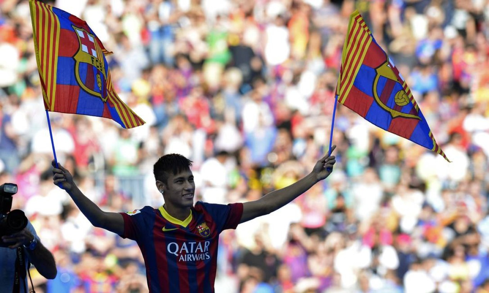

uma pagína de curiosidades sobre o Neymar, onde mostra a trajetória dele e suas conquistas
o começo de Neymar, no santos aonde ele era apenas uma promessa mas ainda assim, conquistou a libertadores e um púkas, Neymar se apresentava ao mundo como um fenômeno do futebol mundial , muitas pessoas dissiam que ele era o pŕoximo pelé, no caminho ao santos apareceram variás oportunidades até mesmo pra ir pro real madrid (melhor time do mundo na epóca) Neymar encerra seu ciclo no santos com 1 copa da libertadores, 1 copa do brasil, 1 recopa sul americana e 3 campeonato paulista.
 E no dia 26 de maio de 2013 Neymar se juntou ao barcelona.
E no dia 26 de maio de 2013 Neymar se juntou ao barcelona.

o auge, onde o Neymar se torna a estrela e craque que ele é, onde conquistou vários titulos e conquistas, conquistando a competição mais privélegiada do planeta (champions league) e marcando gol na final, foi no barcelona por mais que muitos achem que o auge técnico dele foi no psg, onde ele conquistou mais titulos relevamtes foi no bacelona.
No barcelona o neymar chegou ao pico da carreira, faznedo um dos trios mais letais da história, formado por Lionel Messi, Luís Suarez e Neymar Junior, o trio chhegou a ter 364 gols e 173 assistência, com o Neymar sendo provavelmente a peça chave desse trio.
Neymar pelo barcelona foi um fenômeno total em todos os jornais do mundo quando tinha jogo só se falava de Neyma

pelo barcelona Neymar teve 123 jogos 86 gols e 59 assistências, conquistou 1 liga dos campeões, 1 mundial de clubes, 2 laligas, 3 copas do rei e 1 supercopa da espanah encerrando uma passagem brilhante pelo clube catalão